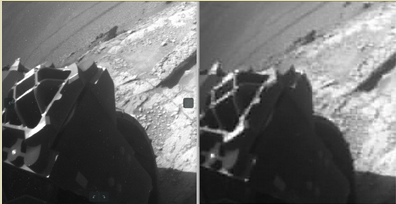
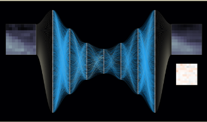
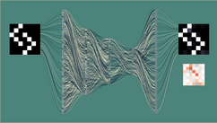
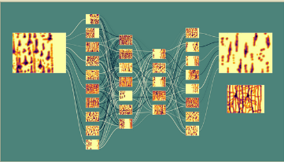

Welcome!
Pour yourself a mug of something hot and have a look around.
Here are some
recommended e2eML course sequences to get you started.
Brandon
320 series
Build convolutional neural networks for image classification from scratch.
321. One Dimensional Convolutional Neural Networks
|
|
322. Two Dimensional Convolutional Neural Networks
|
310 series
Build a neural network-powered image compressor from the ground up.
|
 |
314. Neural Network Optimization
|
|
 |
313. Advanced Neural Network Methods
|
|
 |
312. Build a Neural Network Framework
|
|
 |
311. Neural Network Visualization
|
200 series
Application-centered case studies.
100 series
Foundational concepts and skills.